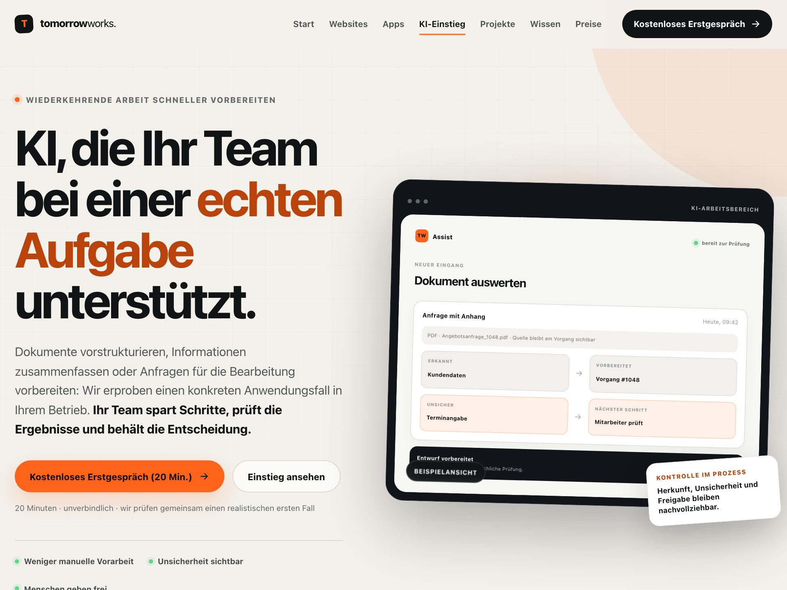

Leistung · KI-Einstieg
KI, die Ihr Team bei einer echten Aufgabe unterstützt.
Dokumente vorstrukturieren, Informationen zusammenfassen, Anfragen für die Bearbeitung vorbereiten — mit Kontrolle und Nachvollziehbarkeit durch Ihr Team.
- Anwendungsfall vor Werkzeug
- Pilot vor Vollausbau
- Verantwortung bleibt klar
01 · Einstieg
Drei Phasen. Kein Blindflug.
-
KI-Chancen prüfen
Wir ordnen ein, wo KI in Ihrem Betrieb verlässlich Zeit sparen kann — und wo nicht.
-
Pilot entwickeln
Eine echte Aufgabe wird erprobt — klein, messbar, mit klaren Regeln.
-
Team mitnehmen
Ihre Mitarbeitenden werden befähigt — die Entscheidung bleibt bei ihnen.
02 · Planbarkeit
Klare Schritte, klarer Umfang.
- Analysephase
- 1–2 Wochen bis zur Einordnung Ihrer Anwendungsfälle.
- Pilot
- Typisch 4–10 Wochen von der Regel bis zum erprobten Ablauf.
- Lieferumfang
- Definierter Arbeitsablauf, funktionierende Lösung, dokumentierte Testfälle.
- Vorgehen
- Beobachten → Regeln → Pilot → Entscheiden.
03 · Praxisbeispiel
Dokumente vorbereiten im Werkstattbetrieb.

Unterstützen statt entscheiden
Eingehende Dokumente werden vorstrukturiert, unsichere Werte deutlich markiert und die Quellen am Vorgang erhalten — freigegeben wird von Mitarbeitenden, nicht von der Maschine.
04 · Leitplanken
Damit KI ein Werkzeug bleibt.
- Kritische Ergebnisse werden von Menschen geprüft — sensible Entscheidungen bleiben im Team.
- Zugriffe und Anbieter werden bewusst begrenzt; nur freigegebene Daten werden verbunden.
- Ausgebaut wird nur, was erkennbaren Nutzen zeigt — kein Vollausbau auf Verdacht.
Sprechen wir über Ihren ersten Anwendungsfall.
Das Erstgespräch ist kostenlos und unverbindlich — wir schauen gemeinsam, ob sich ein Pilot für Ihren Betrieb lohnt.